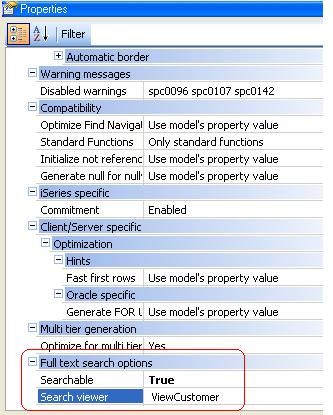

The following are the neccessary steps to be taken in order to configure Full Text Search in your final application. Under "Full Text Search options section" in Generator propertiesSearchable PropertyIf the Searchable property is set to TRUE, all Business components of the KB are made searchable. You can change it locally for certain Business Component if you want (see below). Search Engine PropertyOnly if the Searchable property is set to TRUE. It specifies the search Engine to be used (in our first approach we chose Lucene as our Search Engine, but we can add others in the future). Index Directory PropertyOnly if the Searchable property is set to TRUE. It specifies the directory where the index files will be stored. Available properties for transactions which are Business ComponentsSearchable Transaction PropertyIf set to TRUE it means that this transaction will be searchable. Search Viewer Transaction PropertyIt's a GeneXus object, which has to receive the key of the transaction as a parameter. It's the associated viewer of the transaction when the search result item belongs to this transaction. That is, when calling the viewer of the SearchResultItem transaction, this object will be loaded. By default it's the view of this transaction if Work With Pattern has been applied, or otherwise the Transaction in display mode.  NoteIn order to use full text search functions for files, you don't need to set any property, just use the functions explained in the following links. See alsoFull Text Search Data Types |
| Backlinks | |
| Category:Full-Text Search in Applications | Searchable property |